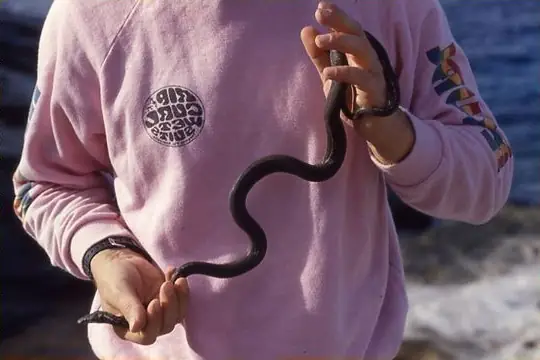

Bolyeriidae
The family Bolyeriidae (Round Island boas) has 2 species in SnakeList (none venomous), in 2 genera.
- 2species
- 2non-venomous
- 2genera
About the family
Two species from the islands of Mauritius in the western Indian Ocean, today confined to tiny Round Island.[1,2]
Sources for this introduction
- Snake families (course notes). George Mason University.
- IUCN Red List assessments of snakes. Repfocus.
Information last reviewed 9 November 2026.
Species
Showing 2 species

Round Island BoaCasarea dussumieri- No photo yetRound Island Burrowing BoaBolyeria multocarinata
No snakes in Bolyeriidae match.